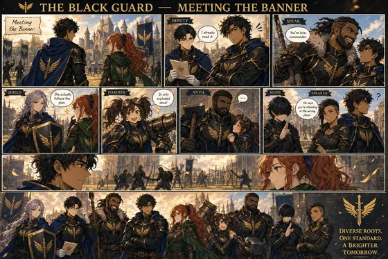
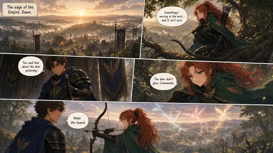
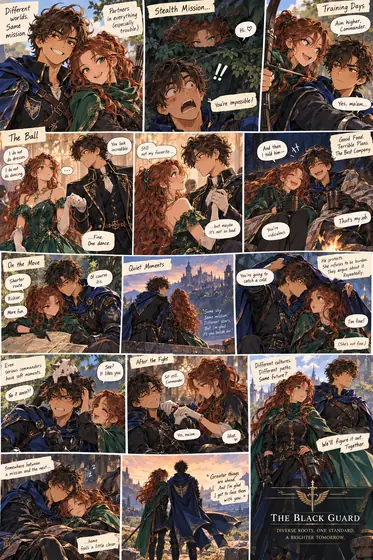

📜 Letters of the Two Worlds
← Everything We Built
Home
Letters
Ashara
Lore
Characters
Comics
Ranks · Draft
Comics
Comic pages from the world. Tap a page to see it large.

The Black Guard — Meeting the Banner

Wake the Guard
Comic page

Field-guide comic sheet
main_v1